Computer Vision · Face Analysis
Face Mapping Lab
Real neural face mapping — 68-point landmarks, 478-point neural mesh, and a CCTV face-recognition system that tells the truth about tiny faces. Built by Usman Kalera.
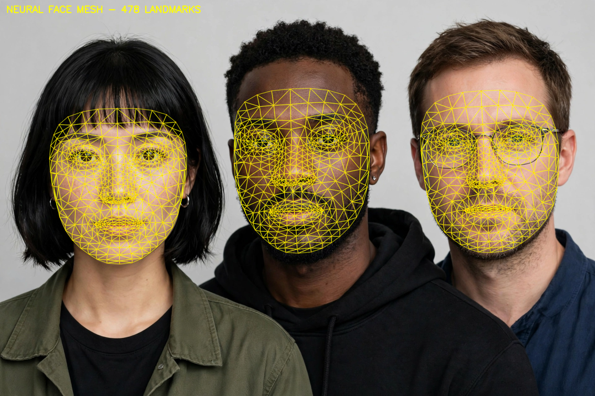
01 · Landmark detection
68-Point Face Mapping
Classic facial landmark detection with a neural 2D-FAN model — jaw, brows, eyes, nose and mouth mapped with a Delaunay mesh. Works on single faces and groups.
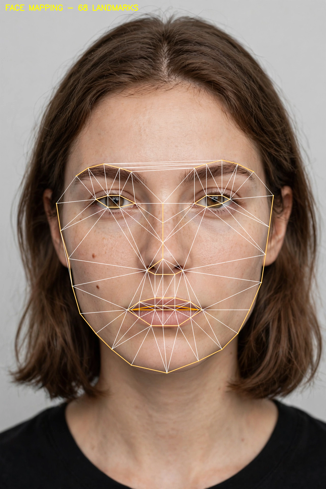
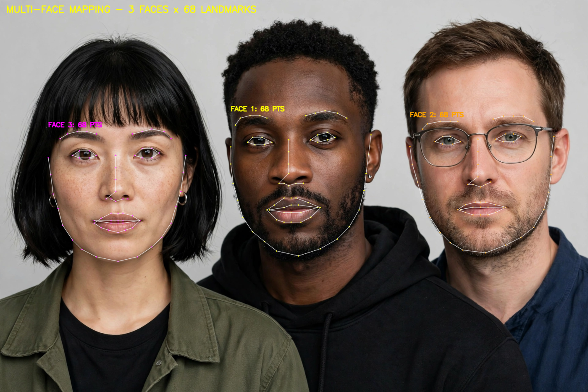
02 · Dense 3D-style mesh
478-Point Neural Mesh
A dense “neurological-style” face mesh — 478 landmarks per face from a neural face-landmarker model, rendered as a glowing wireframe. Then tracked across every video frame.
03 · Beyond the face
Full-Body Pose + 3D Mesh
Face mapping is only the start. YOLOv8-pose maps 17 body keypoints — shoulders, elbows, wrists, hips, knees, ankles — and the 478-point neural mesh carries real depth (x, y, z), rendered here as a rotating 3D point cloud.
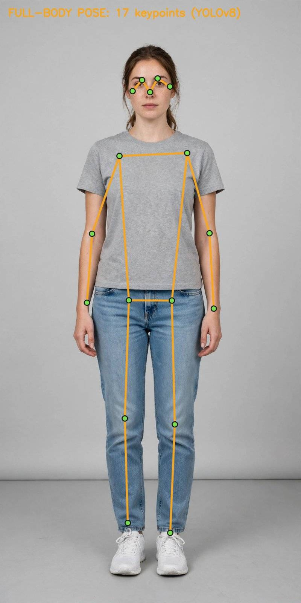
Why it matters: pose unlocks gait analysis, fall detection and activity recognition — and 3D landmarks enable head-pose estimation and AR face filters. Same lab, bigger canvas.
04 · Real-world system
CCTV Face Recognition v2
A complete pipeline: YuNet detection → tracking → SachiEnhance → SFace recognition → best-frame selection → quality gate. Tested honestly on night-vision CCTV frames.
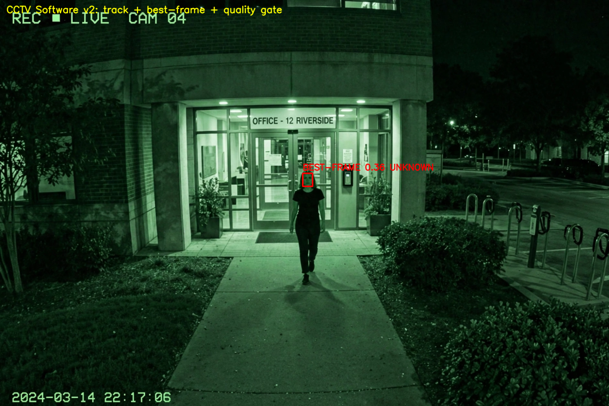
The honest test
← swipe to see full table →
| Test | Similarity | Result |
|---|---|---|
| Parking-lot frame (person too far) | — | 0 faces detected — genuinely undetectable |
| Entrance frame, raw 32×40 px face | 0.342 | UNKNOWN (threshold 0.40) |
| + SachiEnhance (denoise + faithful SR) | 0.365 | UNKNOWN — improved, still below threshold |
| + Real-ESRGAN (GAN hallucination) | 0.182 | WORSE — GAN invents fake identity details |
| Best-frame over 12-frame track | 0.365 | UNKNOWN → flagged for review |
Key finding: at 32 px, software can help a little — but it cannot invent missing identity. A good system says “I don’t know, a human should check” instead of guessing wrong. That honesty is the feature.
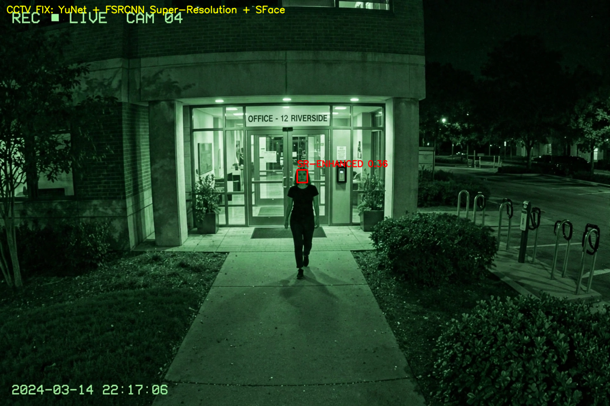
05 · The enhancement method
SachiEnhance v2
Sachi means “truthful”. A faithful tiny-face enhancer for recognition: light denoise + FSRCNN super-resolution. No hallucination, no contrast tricks — because for recognition, pretty lies hurt and honest pixels help.
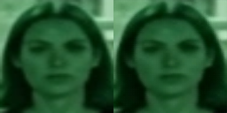
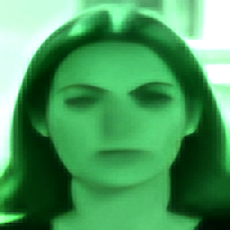
What helped vs what hurt
← swipe to see full table →
| Technique | Δ similarity | Verdict |
|---|---|---|
| Light denoise + FSRCNN (SachiEnhance) | +0.031 | ✅ helps — faithful only |
| Flip-averaged embeddings (TTA) | small + | ✅ helps |
| Best-frame over track | +0.010 | ✅ helps slightly |
| Real-ESRGAN hallucination | −0.161 | ❌ invents wrong identity |
| CLAHE contrast boost | −0.111 | ❌ amplifies noise |
| Enhancing the enrollment photo | very − | ❌ never enhance clean references |
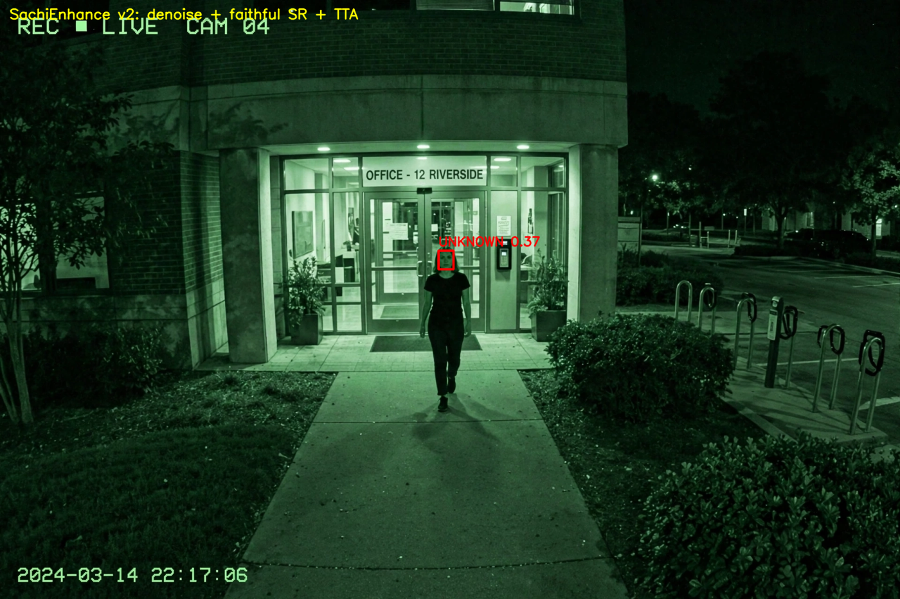
06 · Lab tests & proofs
Stress-Tested, On Video
Real benchmark runs, not claims. YuNet detection was stress-tested against blur, noise and distance — and the full pipeline was timed on CPU. Watch the live execution.
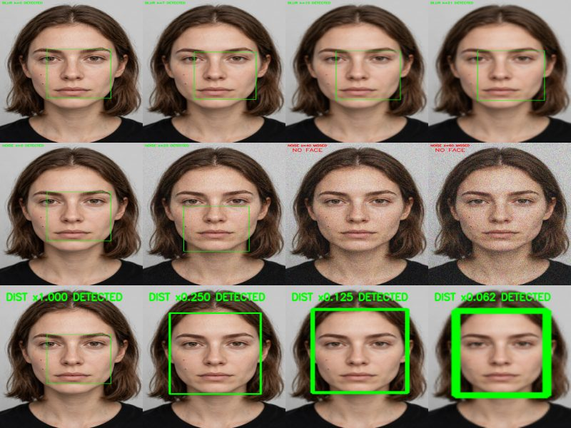
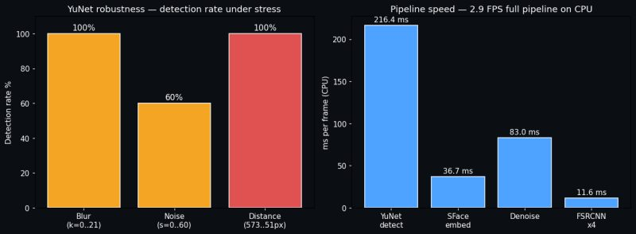
Benchmark results
← swipe to see full table →
| Stress test | Result | Limit found |
|---|---|---|
| Gaussian blur k = 0 → 21 | ✅ 6/6 detected | None — detected even at extreme blur |
| Gaussian noise σ = 0 → 60 | ✅ 3/5 detected | Fails at σ ≥ 40 |
| Simulated distance (face 573 → 51 px) | ✅ 5/5 detected | Detected down to 51 px wide |
| YuNet detect (CPU) | 216.4 ms | Full pipeline: 347.7 ms = 2.9 FPS on CPU |
| SFace embedding | 36.7 ms | |
| Denoise | 83.0 ms | |
| FSRCNN ×4 super-resolution | 11.6 ms |
Honest note: detection is tougher than it looks here — recognition (telling who) is the harder problem, as the CCTV tests above show. Detection = “a face is there”; recognition = “whose face”.
Biometric accuracy: genuine vs impostor
Same person (with rotation, brightness, blur, downscale changes) vs different people — scored by SFace. The ranges overlap: no perfect threshold exists, which is exactly why the quality gate matters.
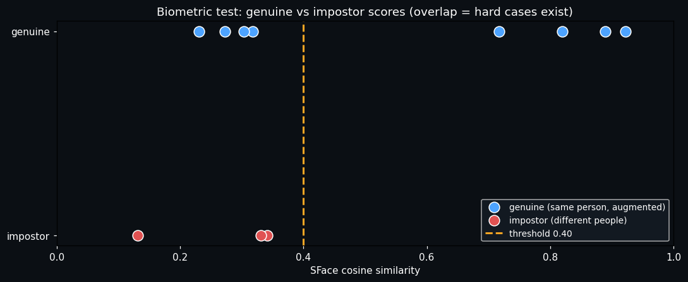
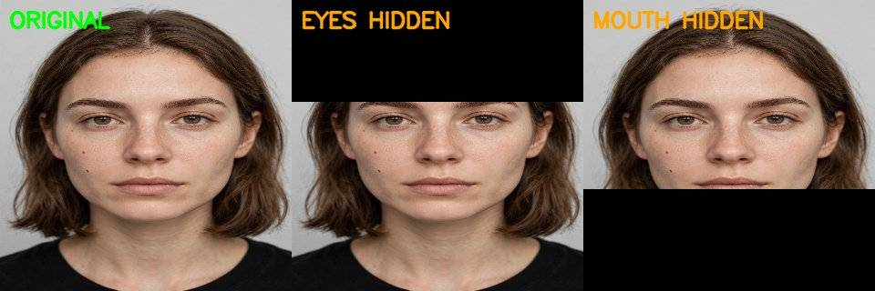
← swipe to see full table →
| Condition | Similarity | Reading |
|---|---|---|
| Rotation ±5° | 0.92 / 0.31 | ⚠️ asymmetric — direction matters to SFace |
| Rotation ±10° | 0.27 / 0.72 | ❌ beyond ±5° is unreliable |
| Darkened −30 | 0.23 | ❌ poor lighting breaks it |
| Brightened +30 | 0.89 | ✅ fine |
| Heavy blur | 0.82 | ✅ fine |
| 4× downscale | 0.30 | ❌ tiny faces fail (the CCTV problem) |
| Eyes hidden | 0.77 | ✅ surprisingly robust |
| Mouth hidden | 0.96 | ✅ barely affected |
07 · Open code
Run it yourself
Two small Python modules. Models download automatically from public sources (YuNet, SFace, FSRCNN).
cctv_software.py
Full v2 system: enroll → identify_frame → identify_track with quality gate.
from cctv_software import CCTVFaceRecognition
s = CCTVFaceRecognition()
s.enroll("person-1", clean_photo)
print(s.identify_frame(cctv_frame))
# (None, 0.365, 0.63, 'UNKNOWN -> flag for review')
print(s.identify_track(frames_12))sachi_enhance.py
The faithful enhancer in 10 lines.
def sachi_enhance(crop):
d = cv2.fastNlMeansDenoisingColored(
crop, None, 4, 4, 7, 21)
return sr_model().upsample(d) # FSRCNN x4Note: all faces shown are AI-generated test faces, never a real person’s photo. The pipeline works on any face image or video.